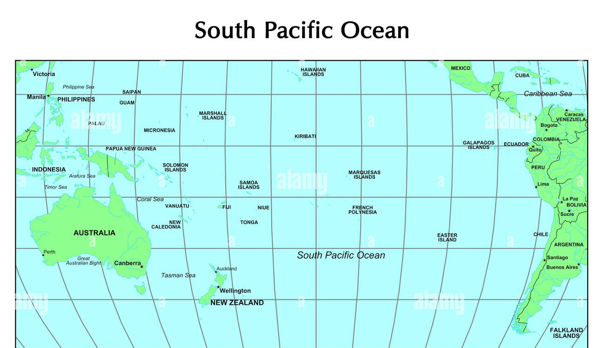

1.The Artic Ocean
|
1.The Arctic Ocean is the smallest and shallowest of the world's five major oceans.
2.It spans an area of approximately 14,060,000 km2 .
3.It is known as one of the coldest of oceans.
4.It is also seen as the northernmost part of the all-encompassing World Ocean.
5.Also known as the Arctic Mediterranean Sea.
|
2.The North Atlantic Ocean |
1.The Atlantic Ocean is the second-largest of the world's five oceans.
2.It has an area of about 85,133,000 km2 (32,870,000 sq mi).
3.It covers approximately 17% of Earth's surface and about 24% of its water surface area.
4.During the Age of Discovery, It was known for separating the "Old World" (Africa, Europe, and Asia) from the "New World" (the Americas).
5.The maximum depth known is Puerto Rico Trench
8,376m (27,480 ft).

|
3.The Indian Ocean |
1.The Indian Ocean is the third-largest of the world's five oceanic divisions.
2.It has area covering 70,560,000 km2 (27,240,000 sq mi) or ~20% of the water on Earth's surface.
3.It is bounded by Asia to the north, Africa to the west and Australia to the east.
4.Along its core, the Indian Ocean has large marginal, or regional seas, such as the Arabian Sea, Laccadive Sea, Bay of Bengal and Andaman Sea.
5.It has depth of 7,290 m (23,920 ft)
(Java Trench)
|
4.The pacific ocean |
1.The Pacific Ocean is the largest and deepest of Earth's five oceanic divisions.
2.It extends from the Arctic Ocean in the north to the Southern Ocean (or, depending on definition, to Antarctica) in the south, and is bounded by the continents of Asia and Oceania in the west and the Americas in the east.
3.it has surface area of about 165,250,000 km2.
4.It has max depth upto 10,911 m (35,797 ft).
5.The water volume is 710,000,000 km3.
|
5.The Antartic Ocean |
1.The Southern Ocean, also known as the Antarctic Ocean.
2.It comprises the southernmost waters of the world ocean.
3.It is generally taken to be south of 60° S latitude and encircling Antarctica.
4.It has surface area size of 20,327,000 km2 .
5.it is regarded as the second-smallest of the five principal oceanic divisions: smaller than the Pacific, Atlantic, and Indian oceans but larger than the Arctic Ocean. |
6.The south atlantic ocean
|
The South Atlantic Ocean is located south of the equator, between the eastern coast of South America and the western coast of Africa. It extends to the Antarctic continent, including the Drake Passage, South Sandwich Islands, and Falkland Islands
2.It has an area of about 85,133,000 km2 (32,870,000 sq mi).
3.It covers approximately 17% of Earth's surface and about 24% of its water surface area.
4.During the Age of Discovery, It was known for separating the "Old World" (Africa, Europe, and Asia) from the "New World" (the Americas).
5.The maximum depth known is Puerto Rico Trench
|
7.South pacific Ocean |
1.The Pacific Ocean is the largest and deepest of Earth's five oceanic divisions.
2.It extends from the Arctic Ocean in the north to the Southern Ocean (or, depending on definition, to Antarctica) in the south, and is bounded by the continents of Asia and Oceania in the west and the Americas in the east.
3.it has surface area of about 165,250,000 km2.
4.It has max depth upto 10,911 m (35,797 ft).br
5.The water volume is 710,000,000 km3.

|